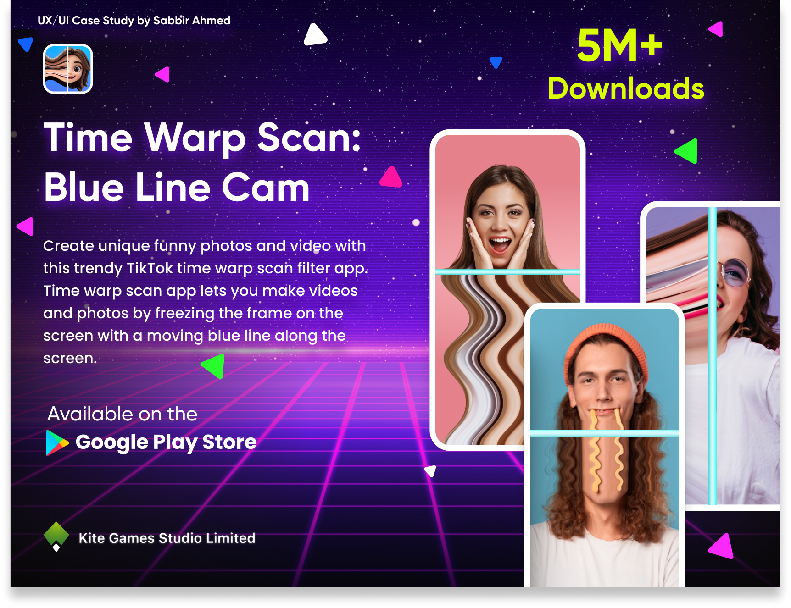
Time Warp Scan: Blue Line Cam
A Time Warp Scan is a filter based app, inspired by tiktok's blue line effect. With a moving scan line users can make funny and distorted photos and videos.
Professional practice
As a UX Designer at Kite Games Studio Limited, I have worked on both mobile and web applications. I have helped create new products and improve existing ones by making them easier, clearer, and more enjoyable to use. The applications I worked on have reached more than 10 million downloads and are currently available on the App Store, Google Play Store, and the web.

A Time Warp Scan is a filter based app, inspired by tiktok's blue line effect. With a moving scan line users can make funny and distorted photos and videos.
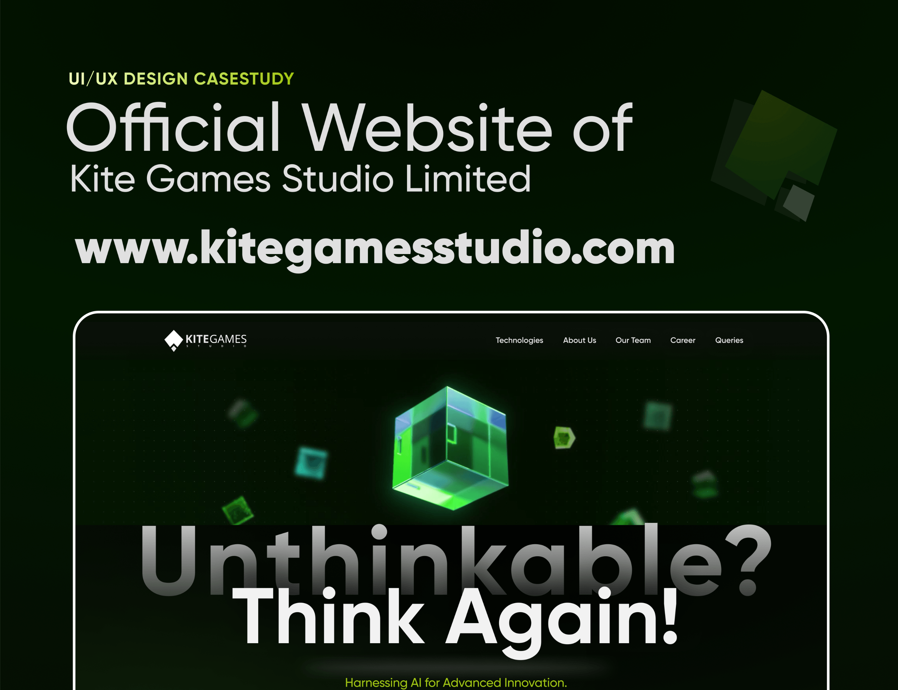
Redesigned the Kite Games Studio's Official website, improving its visual style, structure, and overall user experience.
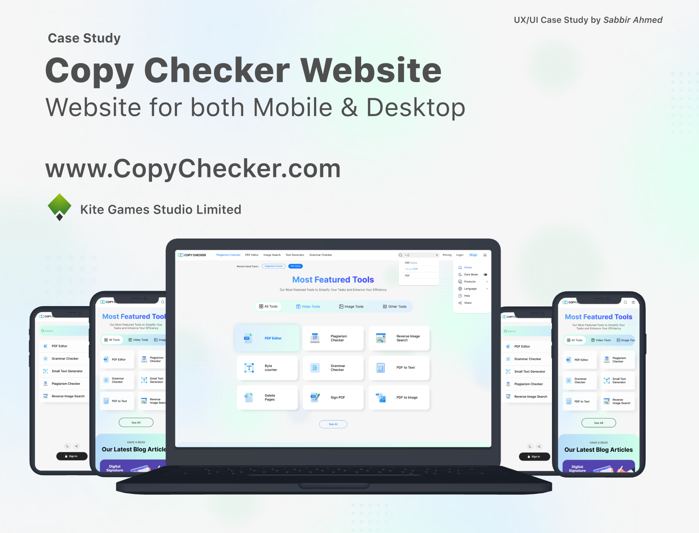
CopyChecker is an online writing platform that helps users check plagiarism, improve grammar, rewrite text, detect AI-generated content, and work with PDF documents through a simple web interface.
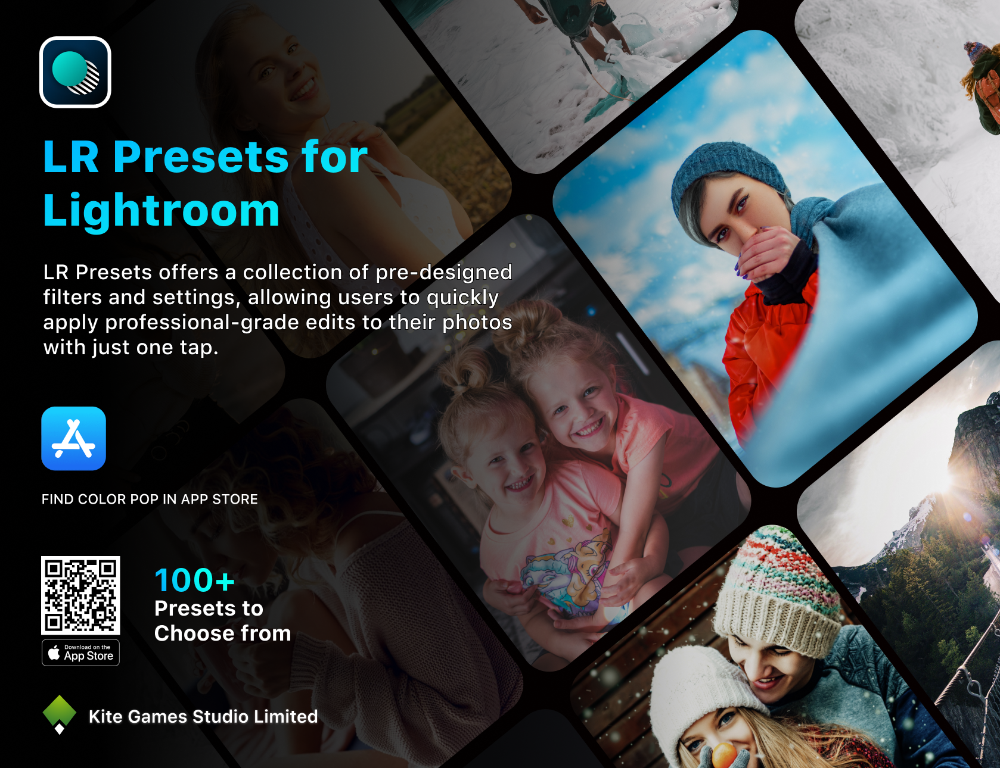
A preset-browsing experience that helps users preview, compare, and apply visual styles with fewer steps.
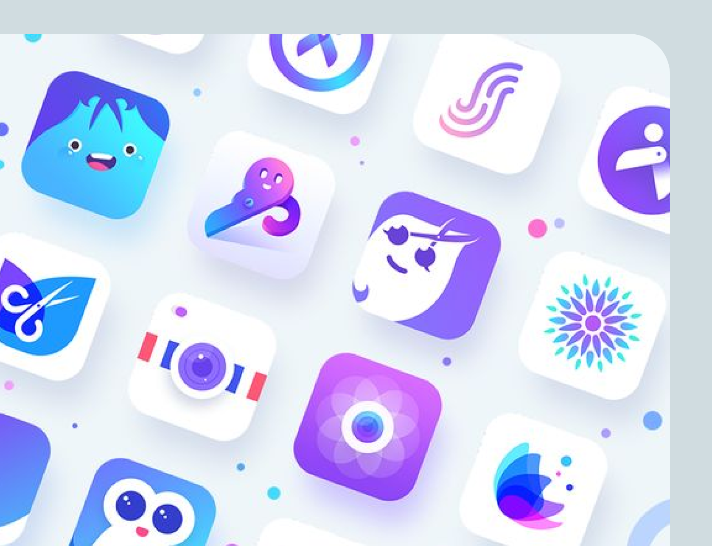
A collection of visual identities developed to translate brand personality into memorable and flexible marks.
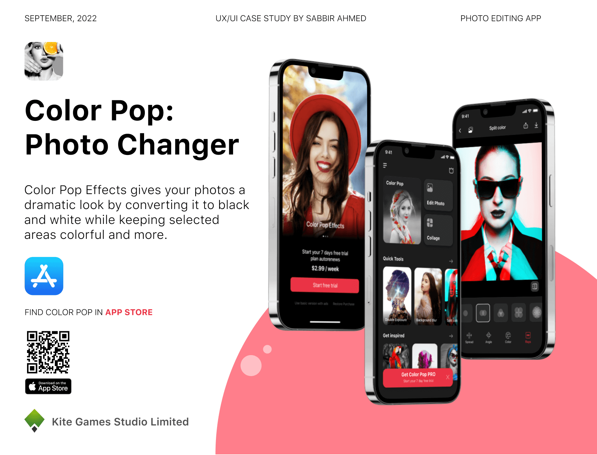
Color Pop Effects is a photo-editing app that lets users recolor selected parts of an image while turning the rest black and white.
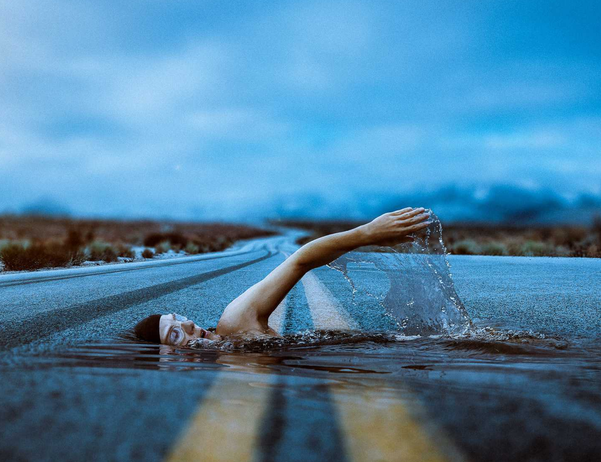
Experimental image compositions combining retouching, visual storytelling, and controlled graphic effects.
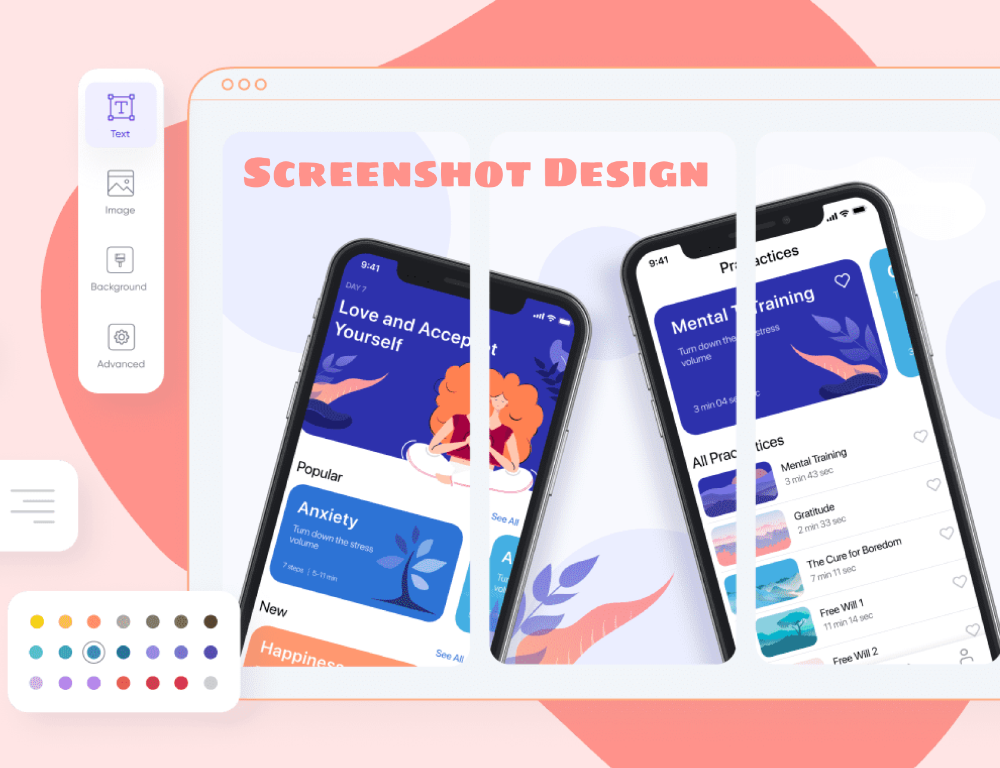
Product stories translated into concise store visuals that communicate features, value, and interface quality at a glance.
MFA & design studies
Studying Communication Design as a gradute researcher, I am especially interested in how visual systems, interaction, participation, and human behavior shape the way people understand information and experience design.
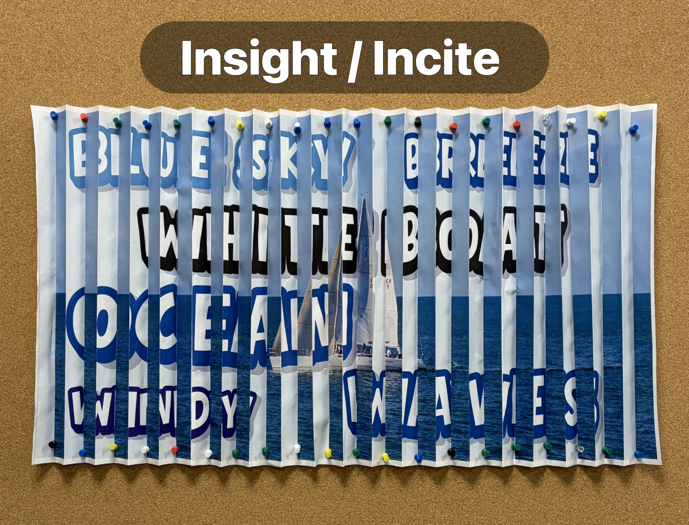
A participatory study examining how structured words, incomplete clues, and visual presentation influence the mental images people construct.
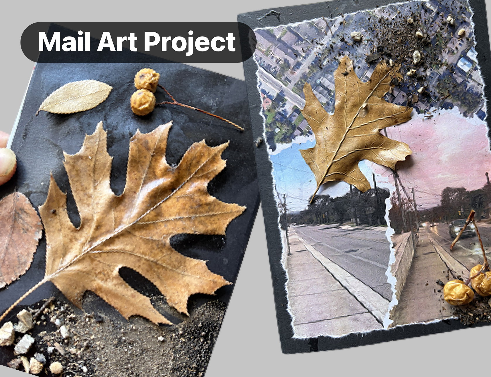
A mail art project exploring how messages change through distance and share with friends to have prospective idea on their version of the Art.
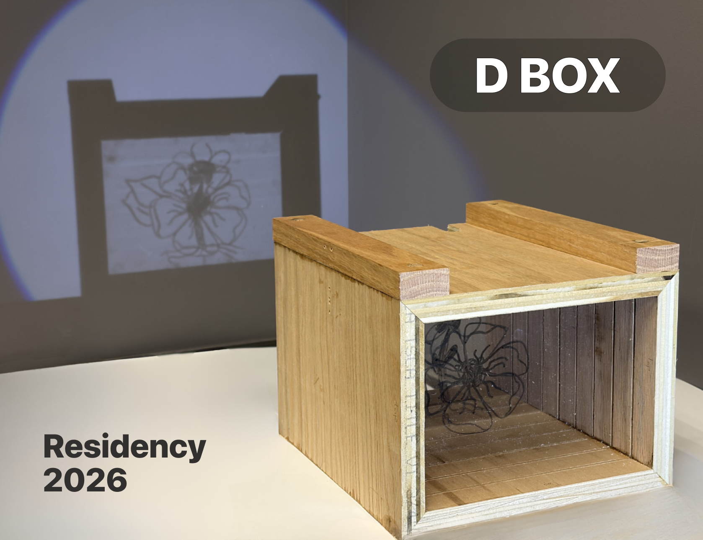
DBox is about distance. Its a participatory shadow art. Two person as group participate the play where with same prompt they have to draw their view of that particular topic .

An interactive walking treasure hunt that uses QR-coded story tags attached to environmental objects.
Beyond the visual work